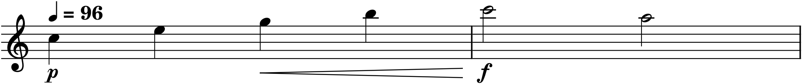
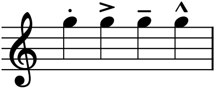
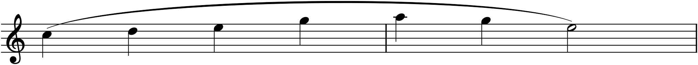

Everything so far has told a performer which notes to play and when. None of it tells them how. Yet the same sequence of pitches and rhythms can be a lullaby or a threat depending on whether it is played soft or loud, smooth or sharp, slow or fast, swelling or fading. Those instructions — the expression markings — are how a composer speaks to a performer across time, and they are what separate a correct sequence of notes from a piece of music. This chapter, the last in Part 1, covers the three families: how loud (dynamics), how each note is shaped (articulation), and how fast (tempo).
10.1Dynamics
Dynamics are the markings of loudness, and they use a small Italian vocabulary. The two roots are piano (soft, written p) and forte (loud, f). Everything else is built from them: mp (mezzo-piano, medium-soft), mf (mezzo-forte, medium-loud), and, for extremes, pp and ff (very soft, very loud), extending to ppp and fff. It is a relative scale, not a set of decibels — f means “loud for this piece” — but the ordering is fixed, from ppp at the quietest to fff at the loudest.
Loudness also changes, gradually, and that is drawn with a hairpin: an opening wedge for a crescendo (getting louder), a closing one for a diminuendo or decrescendo (getting softer). The words cresc. and dim. mean the same and are used for long stretches.

A few markings act suddenly rather than gradually. sf or sfz (sforzando) means a sharp accent on one note; fp (forte-piano) means loud then immediately soft. These punctuate; the p/f scale and hairpins in Figure 10.1 do the steady work.
10.2Articulation
Where dynamics govern a whole passage, articulation governs the individual note — how it is attacked and released, how it connects (or does not) to its neighbours. A handful of small symbols, placed just above or below the notehead, carry these instructions.

>) — emphasized, leaning into the note; tenuto (the line) — held for its full value, slightly stressed; and marcato (the ^) — strongly accented, harder than an accent. Same note, four different ways to play it.The four in Figure 10.2 are the everyday set. Staccato shortens a note, lifting off it early and leaving air after; it is the opposite of smooth. Tenuto does the reverse, asking for the note’s full length with a gentle weight. Accent and marcato both stress a note, the marcato harder — they mark where the emphasis falls. One more belongs here: the fermata (a dome over a note, 𝄐) suspends time entirely, holding the note or rest as long as the performer wishes before moving on.
10.3Slurs and phrasing
A curved line over a group of notes is a slur, and it means legato: play these notes smoothly connected, with no gap between them, as a single breath or bow-stroke. The slur is also how a composer draws a phrase — the musical equivalent of a sentence or clause — showing the performer where a melodic thought begins and ends.

Do not confuse the slur in Figure 10.3 with the tie from Chapter 6. They look nearly identical — both curved lines — but they mean opposite kinds of thing. A tie joins two noteheads of the same pitch into one sustained sound; a slur connects different pitches and asks only that they be played smoothly. Same curve, entirely different instruction: the tie is about duration, the slur about connection.
10.4Tempo
Tempo is the speed of the beat, and it is set two ways. The traditional way is an Italian mood-word at the top of the piece, naming both a pace and a character. From slowest to fastest, the common ones are:
| Term | Meaning |
|---|---|
| Largo | very slow, broad |
| Adagio | slow, at ease |
| Andante | walking pace |
| Moderato | moderate |
| Allegro | fast, cheerful |
| Vivace | lively |
| Presto | very fast |
The precise way is a metronome mark — a note value equated to a number of beats per minute, like the ♩ = 96 in Figure 10.1, meaning ninety-six quarter-note beats a minute. The two are often used together: Allegro names the character, the metronome mark pins the exact speed.
Tempo can change too. rit. (ritardando) means gradually slowing; accel. (accelerando), gradually speeding up; a tempo returns to the original pace after such a change. And rubato — literally “robbed” time — is the expressive stretching and compressing of tempo that a sensitive performer applies without its being written at all; it is the difference between a metronomic reading and a living one.
10.5The composer’s voice
Expression markings are not decoration added after the “real” notes are chosen — they are part of the composition, and often the most personal part. Take the plainest phrase and it becomes tender at pp with a long slur, or violent at ff with marcato accents, or wistful with a ritardando at the close. The pitches did not change; the music did. As you begin writing your own pieces, from Project 1 onward, resist the urge to leave the markings for later. Decide how a line should feel as you write it, and mark it, because the marking is where your intention becomes something another person can perform. This is the end of Part 1: you can now read and write a fully specified score — pitch, rhythm, key, interval, and expression. Everything after this is about what to do with that fluency.
In MuseScore
All three families live in the Palettes panel (F9), and the most common have keyboard shortcuts.
- Dynamics: open the Dynamics palette, select a note, and double-click a marking (p, mf, f, …). For a hairpin, select the range of notes it should span, then press < for a crescendo or > for a diminuendo — the wedge stretches across the selection.
- Articulations: select a note and toggle the common ones by shortcut — Shift+S for staccato, Shift+V for accent, Shift+N for marcato — or double-click any of them from the Articulations palette. The fermata is in that palette too.
- Slurs: select the first note of the phrase, then press S; the slur appears and you extend it to the last note with Shift+→ (or select the whole phrase first, then S). Press S again to remove one. (Remember: a tie is a different command — T — for same-pitch notes, per Chapter 6.)
- Tempo: the Tempo palette holds both metronome marks and Italian terms; double-click one onto the first beat. You can then edit its number, and MuseScore’s playback obeys it.
Every one of these changes what you hear on playback, not just what you see — the crescendo really swells, the staccato really shortens, the ritardando really slows. Press Space after adding a marking and listen for the difference.
Try it: enter any short phrase, play it flat, then dress it — add a p at the start, select the whole phrase and press < for a crescendo, put a slur over it with S, and drop an Adagio with a metronome mark on the first note. Play it again. Same notes; now it is music.